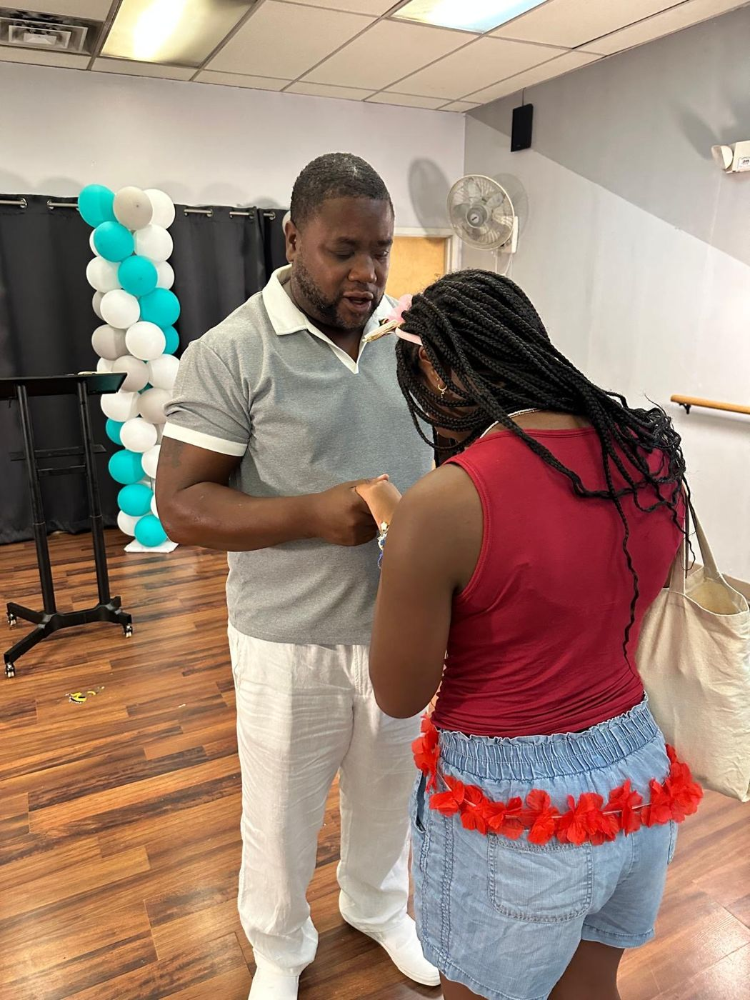
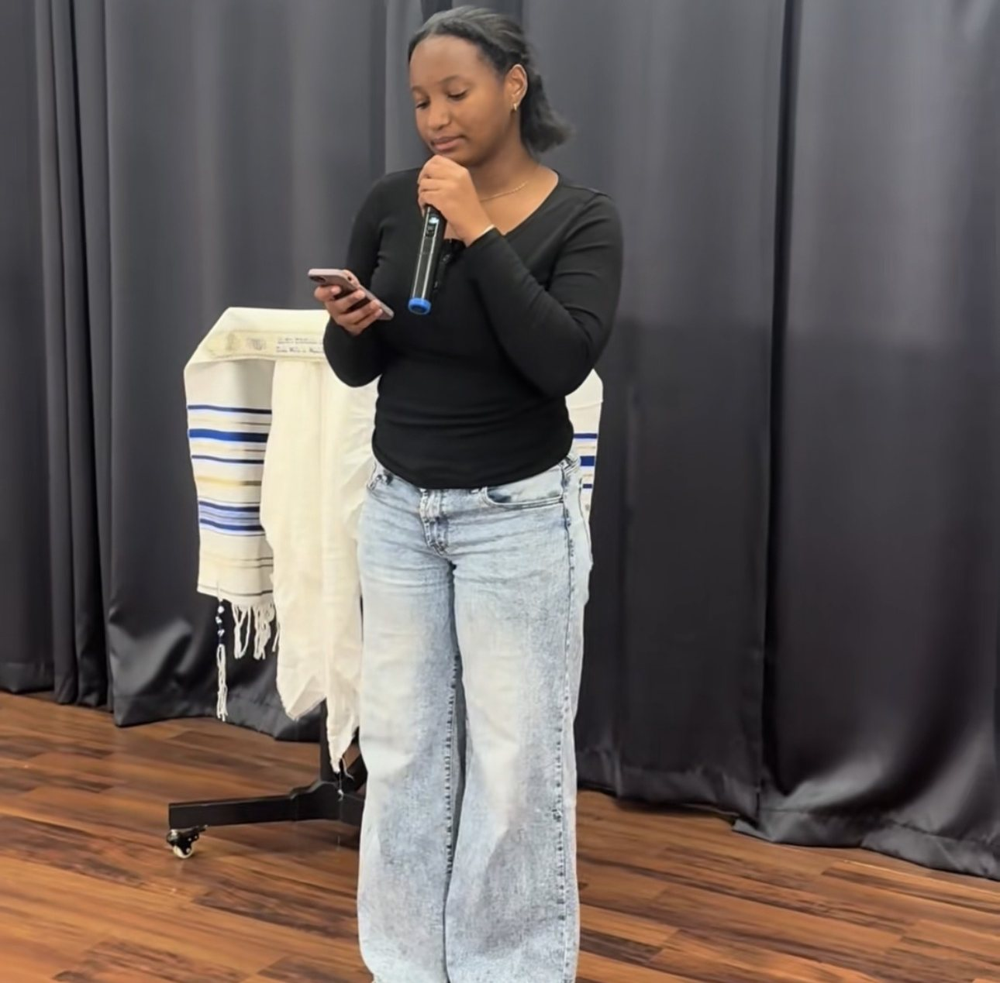
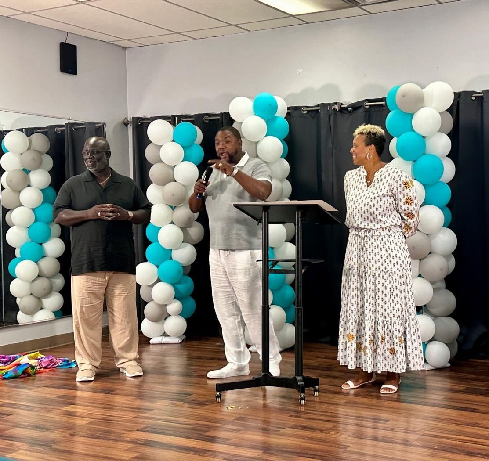

“It is of the LORD's mercies that we are not consumed, because his compassions fail not. They are new every morning: great is thy faithfulness.”
What to Expect on Sunday
Visiting a new church can feel like a big step. Here's what your first Sunday at IGotoHim looks like.

Spirit-Led Worship
Our services aren’t rushed or scripted. We make room for the Holy Spirit to move through heartfelt praise, honest prayer and the reading of God’s Word, followed by a Bible-based message you can carry into your week.
Everyone has a place here. From our youth to our elders, members of all ages share in reading Scripture, praying and leading worship.
“God is a Spirit: and they that worship him must worship him in spirit and in truth.”John 4:24 (KJV)
Arrive 10 minutes early and a greeter will help you find a seat.
Easy parking
Street parking is available on North Cary Street. Look for a greeter at the front door.
Hosanna Kids
Kids have their own Sunday service, led by our Hosanna Kids team.
Come as you are
No dress code. Wear whatever you're comfortable in.
Can’t make it in person? Watch live on Facebook at 11 AM.
Sermon of the Week
Faith. Family. Community.
Pastors Andrew & Patrice Ambroise
After years serving at Restoration Community Church in Brockton, Pastors Andrew and Patrice felt called to change the way church is done. Their mission: serve the community, spread God’s love, and teach God’s Word.
Get to Know Our Leaders →
What's Happening
Take Your Next Step
New to IGotoHim? Have a prayer request? Want to serve? We would love to connect with you.